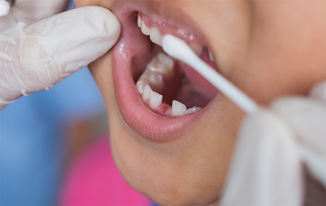
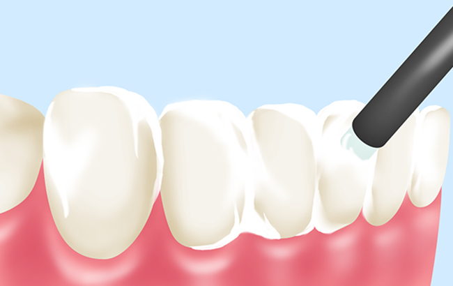
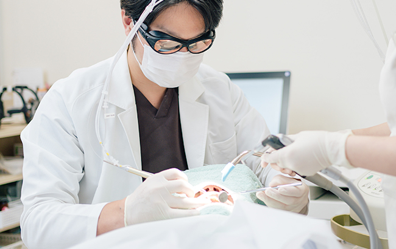
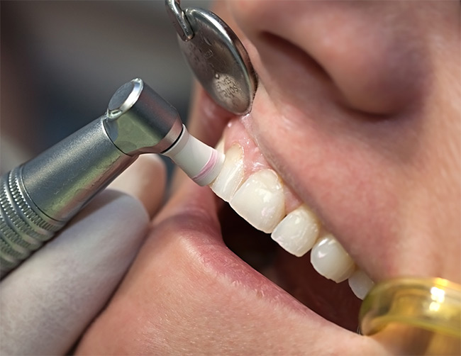
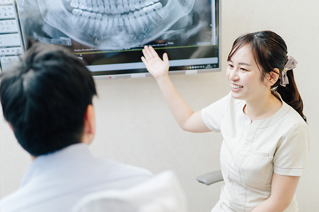
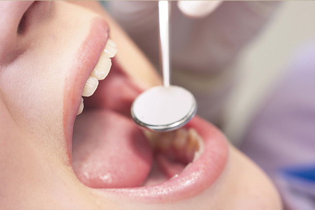

虫歯や歯周病を予防しましょう
～予防・訪問診療～
虫歯や歯周病は発症と進行のメカニズムが分かっているので予防が可能です。そのための基本は毎日のブラッシングで汚れをお口の中に残さないことですが、落としきれない部分からお口のトラブルを起こしてしまいます。そこで加えていただきたいのが歯科医院での定期検診です。お口のトラブル予防のためのさまざまな処置を行います。三島駅・下土狩駅近くの歯医者「MI総合歯科クリニック」にご相談ください。通院が困難な方のための訪問歯科診療にも対応します。
唾液検査で徹底的に原因を追究します
毎日ブラッシングをしていても虫歯や歯周病などのお口のトラブルにかかる方がいらっしゃいます。私たちは一人ひとり体質が異なるように、お口のトラブルを起こしやすい口腔内環境かどうかも一人ひとり異なります。その潜在的なリスクの原因を調べるひとつの手段が唾液検査です。
唾液検査で分かること

唾液検査で分かること
唾液検査では、唾液の量と質を検査します。口腔内の汚れを洗い流す自浄作用がある唾液はたくさん分泌されればお口のトラブルのリスクが低下します。また、食事の際に「酸性」に傾いた口腔内環境を、「中性」に戻す「緩衝能」があるので、その性質の高さも確認するのです。ほかにも、代表的な虫歯菌の「ミュータンス菌」や「ラクトバチルス菌」の数を調べ、おもな歯周病菌のチェックも行います。
検査結果で得られた情報をもとに、患者様のお口の状態に合わせた予防プログラムを作成します。ホームケアとともに定期検診を通して、お口の健康をサポートするのです。
虫歯予防にフッ素は有効です
フッ素には歯質を強化するはたらきが期待できます。歯の表面のエナメル質からカルシウムなどの成分が溶け出す作用「脱灰」を抑制し、また溶け出てしまったカルシウムをふたたび取り込むはたらき「再石灰化」を促します。ほかにも口腔内に存在する虫歯菌を弱らせる作用があり、つくりだす「酸」の量を抑える作用もあるので、虫歯になりにくい歯に導くのです。
フッ素イオン導入により浸透を高める

フッ素イオン導入により浸透を高める
虫歯予防対策のひとつは、歯面へのフッ素塗布で、フッ素が浸透して歯質強化につながります。さらにそのフッ素浸透の割合が高いのがフッ素イオン導入です。フッ素をイオン化し、歯を一時的にプラス極性にして、マイナスのフッ素イオンを取り込みやすくします。局所のフッ素塗布よりもフッ素浸透度合いが4倍以上だといわれています。
レーザー活用で虫歯になりにくい歯に

レーザー照射も歯質強化のための処置のひとつです。虫歯菌のつくりだす「酸」が歯を溶かす虫歯のメカニズムにおいて、歯質強化によって「耐酸性」を高めます。
その他の予防処置メニュー
PMTC

口腔ケアのプロフェッショナルの歯科衛生士が専門歯科器具を使い、口腔内をすみずみまでクリーニングする処置です。毎日のブラッシングでは落としにくい、歯と歯の間や歯と歯ぐきの溝に残っている汚れを除去し、虫歯や歯周病予防につなげます。また、たばこのヤニなどの汚れも落とせるので、歯本来の白さに戻せるうえ、サッパリとして爽快感が得られます。
TBI（ブラッシング指導）

歯の生え方や汚れの残り方をチェックして、お口の状況に合わせたブラッシング方法をアドバイスします。歯ブラシの持ち方や角度、動かし方などをお伝えしますので、しっかり汚れを落とせるように毎日のブラッシングにいかしてください。
3ヶ月に1回はメインテナンスを受けましょう

虫歯や歯周病の原因菌はプラーク（歯垢）に潜んでいます。プラークは「バイオフィルム」というネバネバした強力な膜に覆われていて、抗生剤や殺菌剤などの薬剤が浸透しにくいうえ、なかなか落とせません。このバイオフィルムを壊すことができるのが歯科医院で行うPMTCです。ただ、いったん落としても、3～4ヶ月ほどするとまた元に戻る性質があるので、3ヶ月に1回の歯科医院でのメインテナンスをおすすめします。
定期検診での口腔ケアのさまざまな処置は、痛みをともないません。そしてお口のトラブル予防に有効で、もし、すでに虫歯や歯周病を発症していたとしても早期発見・早期治療につながり、治療は比較的簡単にすみます。お口の健康を保つためにも3ヶ月に1回の定期検診を受けましょう。
訪問歯科診療にも対応します
歯科診療を受けたくても、通院が困難で歯科医院に行けない方はいらっしゃいませんか？ また要介護の方もお口の中の健康はとても大切です。一人でも多くの地域のみなさんのお口の健康のため、当院では訪問歯科診療に対応します。口腔ケアのプロフェッショナルがブラッシング指導やメインテナンスを行います。また合わない入れ歯の調整や修復なども行いますので、「入れ歯が外れやすくなった」「入れ歯が当たる歯ぐき部分が腫れている・痛む」「食べ物がはさまるようになった」など入れ歯の不具合がある方もお問い合わせください。対応エリアはクリニックから1km以内です。まずはお気軽にお問い合わせください。